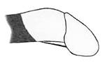

FRENULUM BREVE
A COMMON DELUSION
This page discusses the condition of frenulum breve
of the penis. Its effects have apparently never been accurately described
or fully understood.
A psychologist at the Institute of Sexual Research in Hamburg
was of the opinion that any sexual effects from the frenulum breve
were a delusion. He added "Do you realise how many patients
I have seen that have had their frenulum removed because they
thought this was the cause of their difficulties". (story
continues)
Psychologists could note: - if such experiences are to be understood
as delusions, and many other men have had similar fantasies,... then
it must, at least, be understood as a common delusion.
In 1779 Diderot wrote - "Its
extreme sensitivity shows that it must be covered with a quantity
of nervous papillae; & perhaps for these reasons it merits more
attention on behalf of the anatomists than they have given it up
until present;" - In 1958 Grewel wrote "It cannot be masculine pride alone ... which has caused the
phenomenon to be neglected by male physicians and psychoanalysts,
... resulting in a general or collective repression of the phenomenon."
Though he was referring principally to frenular rips, modern medical
literature (Pienkos, Whelan) confirms that "The existence
of a short frenulum is noted in few urological text books." (Whelan)
Medical, sexual or public information rarely acknowledge the condition.
There are no statistics except on beef cattle and pigs. There are
even a small collection of studies concerned with the early prevention of such problems among farm animals. Perhaps
this is because "Copulation failure in food animals can be economically
devastating to producers." (G. St Jean)
| The only pictures which can depict frenulum breve must
show the foreskin in the retracted position. A quick glance imparts
a false impression of the effects of this condition. |
|

penis during erection |
Thus, the usual description of this short membrane, in practical use
by specialists and even in some medical texts, is that it causes
the glans to bend downward.
Recent specialised medical texts suggest that it is the curvature
of the glans which causes pain (Chitale, Whelan,). It appears
the distortion of the bending phallus and glans is so shocking that
some doctors speculate that this is the origin of the pain, without
ever asking the patients concerned.- It is in fact the tension
of the frenulum pulling on the glans which hurts, and not the bending
glans.
___________________
Men who have this condition often do not understand it themselves.
Anatomically speaking this is a most devious condition. To visually identify a frenulum breve when erect,
involves the carrier in what are to him unnatural contortions.
If the
frenulum is too short it pulls the foreskin forward, therefore it is
hidden underneath and behind the foreskin.
When the penis is erect, to hold the foreskin backwards creates
a feeling of tension. To hold the foreskin retracted, endure the tension
and then turn the phallus in order to be able to look sidewards at
this curious spring structure, is a contortion which Houdini would
have been proud of.
Due to the difficulty involved for the carrier in identifying his
own condition, (and the almost complete lack of accurate information
or education on the condition and its treatment), men often feel pain
or discomfort without realising its cause.
If the problem is recognised its nature is often interpreted incorrectly
and can result in false impressions such as the redundant prepuce (Swartz).or
"there's too much skin" or "it just gets in the way all the time" (private
mail). Often merely on the basis of the frustration this causes,
circumcision is requested.
___________________
With retraction of the foreskin always hurting and the foreskin
sliding forward again, the subject sees the repeated recovering
of the glans as unsuccessful, disappointing , frustrating, ... depending
on sexual attitudes and education its could be experienced as something
which isn`t meant to be done, or even something which it is wrong
to do ... (compare this with phimotic ring where the foreskin simply
can not be retracted, it cant be done, there`s no question about
right or wrong - possibly there are similarities here between all
the conditions which cause pain: fr. br., relative phimosis, skinbridges.)
___________________
The Delsuion is confirmed.
Urologists assume that the frenulum breve starts causing pain
or difficulty first as an adult during sexual intercourse and previously
it had been no problem, - they are unaware that the patient has
avoided this pain during masturbation throughout his development
years. Deeper questioning seems inappropriate probably out of tact
and simply because it's not the urologists job to understand and
counsell on psychosexual problems. Accordingly urologists are unaware
of any long term sexual problem.
It is not suprising that many men go to the psychologists ...
however here the patient will be further confused; the psychologal
literature contains little reference (only Grewel) to the idea that
an anatomical malformation of the prepuce could have a psychosexual
effect - The psychologists approach is that psychosexual problems
are based on parental and early environmental influences.
____________
CONCUSION
So it is clear that someone here is under a delusion:- Grewel
and I maintain it is the medical profession and the psychologists;
and they maintain it is men who think they have sexual problems due to frenulum
breve. Whichever way, it is a common delusion. |